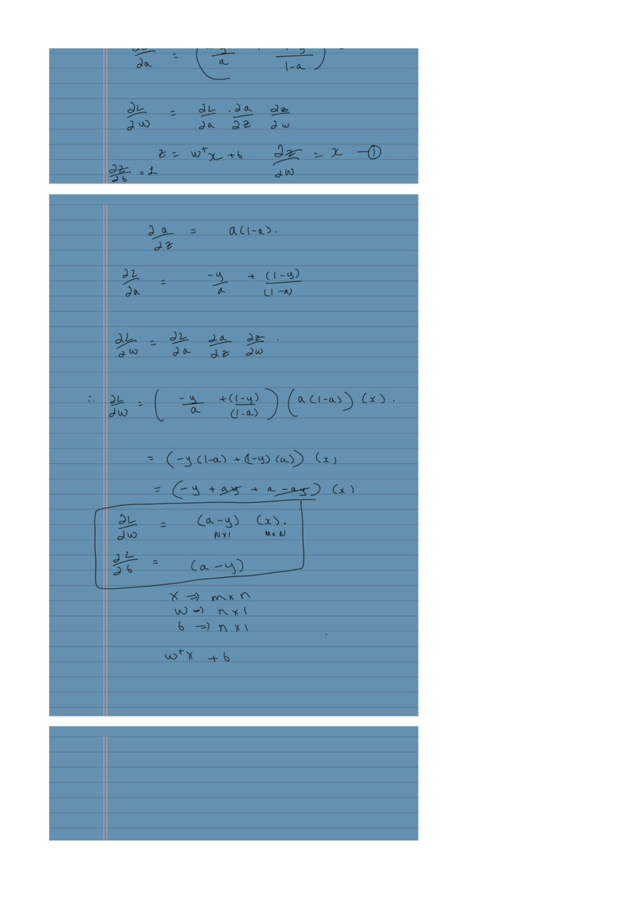

Logistic Regression: From Scores to Learning
Expanded from Logistic Regression.pdf · View a handwritten page
Naïve Bayes estimated how inputs occur within each class. Logistic regression directly estimates the chance of a positive label. We will start with a few learners, turn a score into a probability, and calculate one training update.
What are we trying to predict?
| Learner | Practice hours $x$ | Passed $y$ |
|---|---|---|
| Asha | 0 | 0 |
| Ben | 1 | 0 |
| Cara | 2 | 1 |
| Dev | 3 | 1 |
Begin with the illustrative score $z=-1.5+x$. These are starting coefficients, not fitted estimates. A score can be any real number, so we pass it through the sigmoid to obtain a probability between 0 and 1:
| Learner | Score $z$ | Predicted $p$ | Observed $y$ |
|---|---|---|---|
| Asha | −1.5 | 0.1824 | 0 |
| Ben | −0.5 | 0.3775 | 0 |
| Cara | 0.5 | 0.6225 | 1 |
| Dev | 1.5 | 0.8176 | 1 |
Zero score gives probability 0.5. Large positive scores approach probability 1; large negative scores approach 0. For finite scores, the mathematical sigmoid never reaches either endpoint exactly.
Understand what the linear score means
Odds are probability divided by its complement: $p/(1-p)$. Taking their logarithm recovers the score:
With $w=1$, one additional hour adds 1 to log odds and multiplies odds by $e\approx2.718$. It does not add a fixed amount to probability. From 0 to 1 hour, our probability rises by about 0.1951; from 1 to 2 hours, it rises by about 0.2449.
Why is logistic regression called regression?
The regression relationship is between the inputs and the log-odds. Ordinary linear regression models the mean output directly as $b+wx$. Logistic regression models the log-odds as $b+wx$, then uses the sigmoid to recover a probability. This makes it a generalized linear model: the mean response is connected to a linear score through a transformation.
The observed labels are still 0 or 1. The model estimates $p$, the probability of label 1; for a binary outcome, this is also its mean. We learn $b$ and $w$ from the observed labels, without needing observed log-odds for each row.
Classification happens when we apply a threshold to that probability. Changing the threshold changes the predicted class without changing the fitted probability model. Logistic regression is therefore a regression model used for classification.
Use the observed label to choose the right probability
For a passed learner, the model assigns the observed label probability $p$. For a failed learner, it assigns $1-p$. A single expression handles both cases when labels are 0 or 1:
For Asha, the observed label is 0, so the relevant probability is $1-0.1824=0.8176$. For Cara, the observed label is 1, so it is 0.6225. Multiply those observed-label probabilities over independent training rows to obtain the conditional likelihood.
Taking the negative logarithm produces binary cross-entropy, also called binary log loss:
The row losses are about 0.2014, 0.4741, 0.4741, and 0.2014. Their average is 0.3377, using natural logarithms. A positive example predicted at 0.9 has loss $-\log0.9\approx0.1054$; predicted at 0.1, it has loss about 2.3026. Being confidently wrong is expensive.
Connect the two label conventions in the notes
The handwritten derivation also uses labels $t\in\{-1,+1\}$. Map our labels with $t=2y-1$. Its logistic loss is:
For a positive label, this is $\log(1+e^{-z})=-\log\sigma(z)$. For a negative label, it is $\log(1+e^z)=-\log(1-\sigma(z))$. Both conventions therefore give the same loss after mapping the labels correctly.
A stable implementation can calculate $\log(1+e^z)-yz$ with a log-sum-exp operation. This avoids first rounding the sigmoid to 0 or 1 and then taking its logarithm.
Why the gradient becomes prediction minus label
The sigmoid derivative is $dp/dz=p(1-p)$. The loss derivative with respect to $p$ is $-y/p+(1-y)/(1-p)$. Multiplying these two derivatives cancels the denominators:
Since $z=b+wx$, the intercept gradient is $p-y$ and the slope gradient is $(p-y)x$. Average across our four rows:
| Hours | $p-y$ | $(p-y)x$ |
|---|---|---|
| 0 | 0.1824 | 0 |
| 1 | 0.3775 | 0.3775 |
| 2 | −0.3775 | −0.7551 |
| 3 | −0.1824 | −0.5473 |
The mean intercept gradient is 0; the mean slope gradient is about −0.2312. At learning rate 0.5, the new intercept remains −1.5 and the slope becomes $1-0.5(-0.2312)\approx1.1156$. The mean loss drops to about 0.3150.
import numpy as np
x = np.array([0., 1., 2., 3.])
y = np.array([0., 0., 1., 1.])
b, w = -1.5, 1.0
z = b + w*x
p = 1 / (1 + np.exp(-z))
db = np.mean(p - y)
dw = np.mean((p - y) * x)
b, w = b - 0.5*db, w - 0.5*dw
new_z = b + w*x
loss = np.mean(np.logaddexp(0, new_z) - y*new_z)
print(b, w, loss) # about -1.5, 1.1156, 0.3150For a design matrix $X$ with $n$ rows and $d$ columns, the average-loss gradient is $X^\top(p-y)/n$. Its shape is $d$, matching the coefficient vector. An all-ones column incorporates the intercept into the same expression.
A convex objective still needs a finite solution
The Hessian of the average loss is $X^\top W X/n$, with diagonal weights $W_{ii}=p_i(1-p_i)\ge0$. It is positive semidefinite, so the loss is convex in the linear-model coefficients. With several inputs, that statement still applies to the coefficients of the chosen features.
Our toy data are perfectly separable: a threshold at 1.5 hours classifies every row correctly. Scaling both the slope and intercept of $x-1.5$ upward makes the probabilities more extreme and drives the unregularized loss toward zero. No finite coefficient vector reaches that limiting optimum. Convexity alone does not guarantee a finite MLE.
Use a prior to moderate the coefficients
A zero-mean Gaussian prior on the slopes produces an L2 penalty under MAP. If the prior variance is $\tau^2$, the summed negative log posterior is:
Dividing the whole expression by $n$ gives average loss plus $(\lambda/2)\lVert w\rVert^2$, with $\lambda=1/(n\tau^2)$. The slope gradient gains $\lambda w$. We leave the intercept unpenalized. With both classes present, this penalty prevents the separating slopes in our example from growing without bound.
Library regularization parameters may use different loss scalings. Read the objective definition before treating a parameter value as the same $\lambda$ used here.
Turn a probability into a decision
At threshold 0.5, predict the positive class when $b+w^\top x\ge0$. This is a hyperplane in the model's feature space. In our starting one-feature example, the boundary is $x=1.5$.
At a general probability threshold $q$, the score threshold becomes $\log(q/(1-q))$. Using $q=0.8$ with the starting coefficients requires $x\ge1.5+\log4\approx2.886$. The underlying probabilities stay the same; the decision requirement changes.
Can logistic regression draw a curved boundary?
Yes, if we supply transformed features such as $x_1^2$ or $x_1x_2$. The score remains linear in its coefficients and supplied features, while its boundary can curve in the original input coordinates.
We have now connected a score, its probability, an observed-label likelihood, and a training update. The clustering guide changes the task: we will remove the labels and group points by distance.
From the handwritten notes
This guide expands Logistic Regression.pdf with worked tables and intermediate steps. The PDF contains all the original pages.
View original page 3


Further reading: